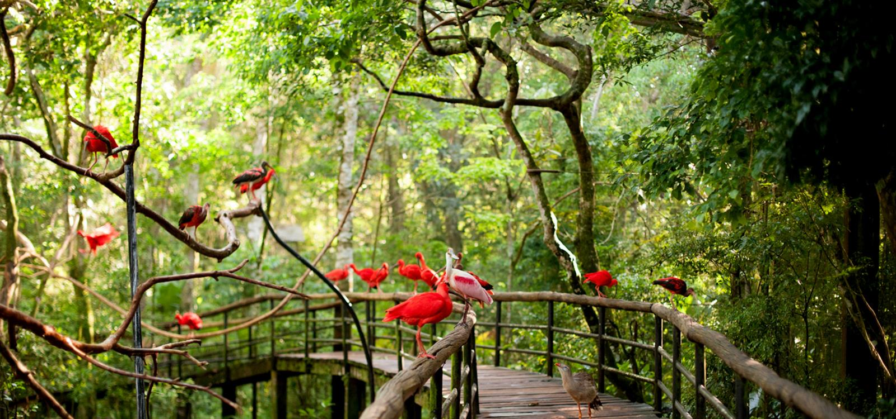

Historia
En los siglos XVII y XVIII el lugar donde se emplaza la actual Foz do Iguaçu fue sede de la localidad hispanojesuítica de Santa María del Iguazú; los bandeirantes portugueses y brasileños la destruyeron; luego recién en 1914 Brasil fundó en este punto tan estratégico la actual ciudad
Toponimia
El nombre de la ciudad (cuyo significado es Boca del Iguazú), fundada en 1914, era originalmente Foz do Iguassu, el cual fue cambiado por el nombre actual, Foz do Iguaçu, en el año 1945 debido a un acuerdo entre las academias de Letras de Lisboa y la brasileña, pasándose a usar la "Ç" con cedilla. En 2005, la ciudad fue interés de la prensa nacional a raíz de una polémica, cuando la cámara de concejales creó un proyecto de ley que cambiaba el nombre oficial de la ciudad al de Foz do Iguassu. El principal alegato era que la "Ç" (cedilla) causaba trastornos y situaciones incómodas para la comprensión de innumerables turistas que visitan la ciudad todos los años. Las dos "eses" serían entonces una manera de "universalizar" el nombre de la ciudad, rescatando la toponimia original, que fue cambiada en los primeros años del siglo XX.
El proyecto por cambiar el nombre (de Foz do Iguaçu a Foz do Iguassu) fue aprobado el día 19 de octubre de 2005 por 8 votos a favor contra 4 votos en contra, en la primera y segunda discusión de la cámara de concejales. Entretanto, fue realizada una consulta popular para la aprobación o no del cambio de nombre. Según los resultados de una encuesta realizada por la municipalidad, donde fueron encuestados cerca de 4 mil personas, más del 90 % afirmaron estar en contra del cambio. Con la repercusión negativa de la población y de los medios de comunicación, el alcalde vetó la medida, y la cámara terminó acatando el veto.